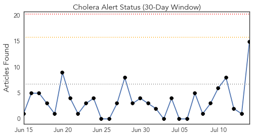
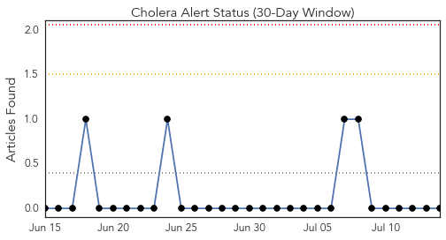
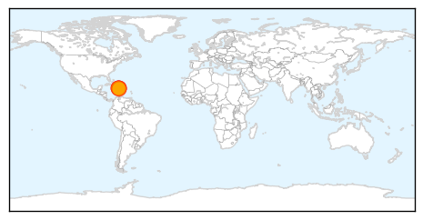
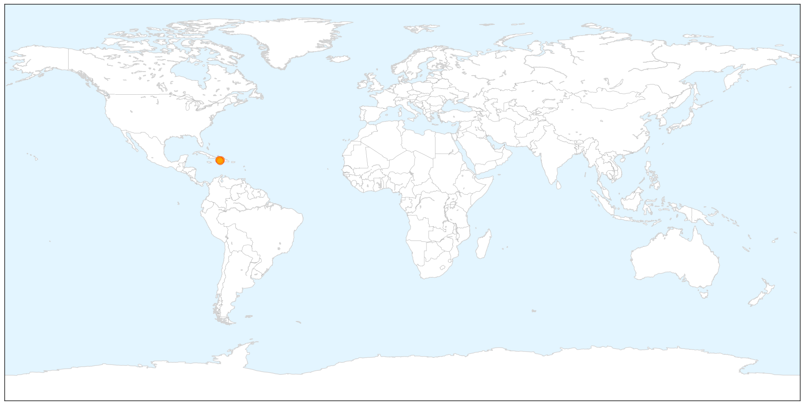
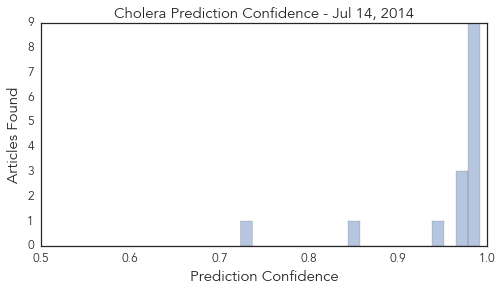
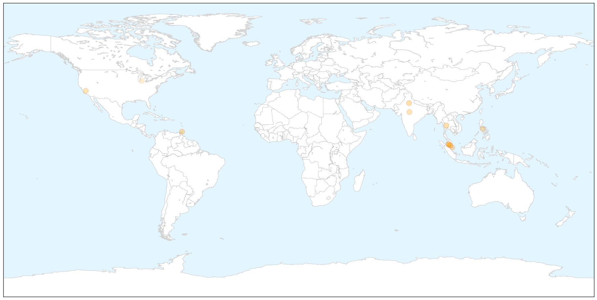

Cholera
30-Day Web Trend
0 alerts, 0 warnings

30-Day Twitter Trend
0 alerts, 0 warnings

Article Locations

X

Article Confidences
Top Articles:
- 0.992
- UN chief makes ``pilgrimage`` to Haiti to address cholera crisis
- 0.991
- U.N. chief makes 'pilgrimage' to Haiti to address cholera crisis
- 0.991
- U.N. chief makes 'pilgrimage' to Haiti to address cholera crisis
- 0.991
- U.N. chief makes 'pilgrimage' to Haiti to address cholera crisis
- 0.991
- U.N. chief makes 'pilgrimage' to Haiti to address cholera crisis
- 0.990
- UN Chief Makes 'Pilgrimage' to Haiti to Address Cholera Crisis
- 0.985
- UN chief in Haiti to launch sanitation program
- 0.981
- U.N. chief flies to Haiti to address cholera crisis
- 0.980
- UN chief in Haiti launches sanitation program
- 0.972
- UN has moral responsibility to end Haiti cholera outbreak, Ban says
- 0.968
- U.N. chief makes 'pilgrimage' to Haiti to address cholera crisis
- 0.968
- UN chief arrives in Haiti to launch program to help improve sanitation, combat cholera
- 0.950
- UN has 'moral responsibility' to tackle Haiti cholera - Emirates 24
- 0.845
- UN chief in Haiti launches sanitation program
- 0.724
- United Nations Secretary-General Ban Ki-moon's Statements
Top Tweets:
-
No tweets found for Jul 14, 2014
Dengue Fever
30-Day Web Trend
5 alerts, 5 warnings

30-Day Twitter Trend
4 alerts, 0 warnings

Article Locations

X

Article Confidences

Top Articles:
- 0.976
- Health department initiates steps to prevent seasonal diseases
- 0.968
- Chikunguyna confirmed in Trinidad
- 0.955
- Test vaccine for dengue shows promise
- 0.885
- Govt sets two-month target to reduce dengue cases - Nation
- 0.862
- Putrajaya targets two months to reduce dengue fever cases – Bernama
- 0.857
- New Vaccine for Dengue Shows Promise
- 0.853
- One death, 22 dengue cases stirs BMC to start fogging
- 0.798
- Two-Month Dengue Target
- 0.787
- 'Two months to stem dengue rise' - Nation
- 0.754
- Cautious optimism greets results of Asian dengue vaccine trial
- 0.723
- Task force to combat dengue
- 0.520
- Vaccinate mosquitoes to stop malaria?
Top Tweets:
-
No tweets found for Jul 14, 2014